Önerilerimiz
Mersin'de Gezilecek Yerler
Otel misafirlerimiz için Mersin'in en güzel noktalarını rehber olarak derledik. Doğal güzellikler, tarihi mekanlar ve sahil rotaları ile unutulmaz bir gezi deneyimi sizi bekliyor.
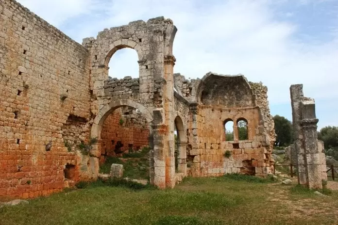
Kanlıdivane
Antik döneme ait etkileyici bir arkeolojik alan.

Elaiussa Sebaste
Roma döneminden kalma tarihi kent kalıntıları.
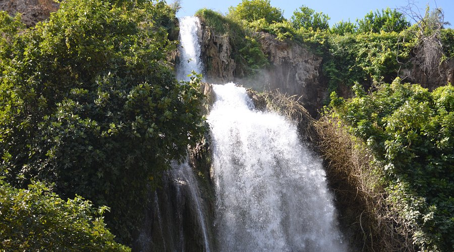
Karacaoğlan Şelalesi
Doğayla baş başa kalabileceğiniz serin bir rota.
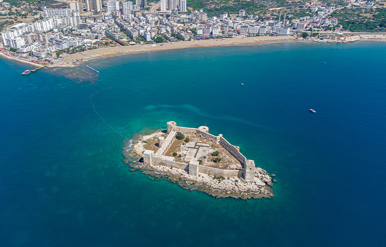
Kızkalesi
Mersin'in simgelerinden, denizin ortasındaki tarihi kale.
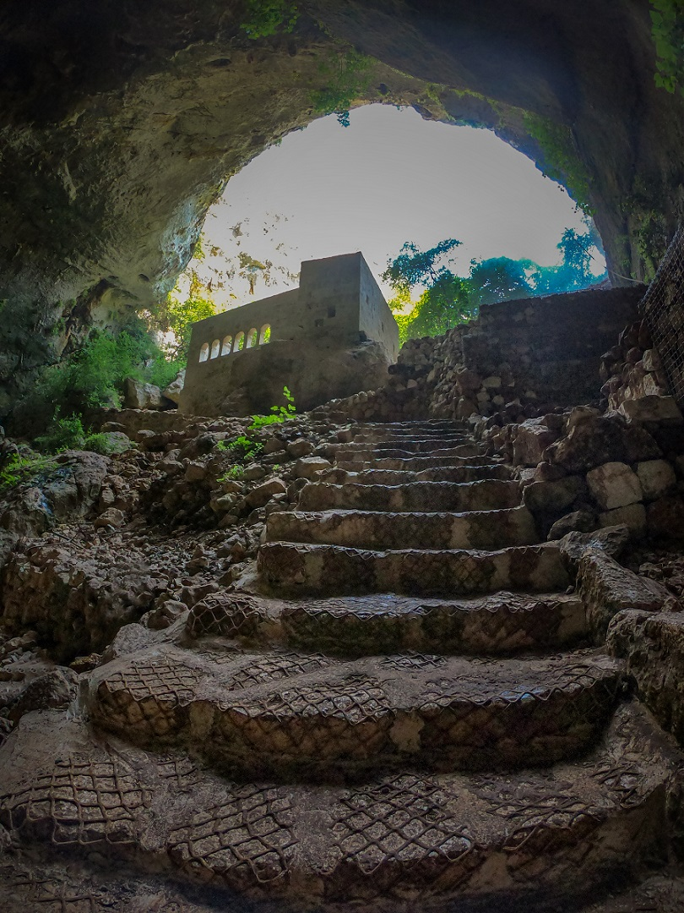
Cennet-Cehennem Obrukları
Mitolojik hikayeleriyle öne çıkan doğal oluşumlar.
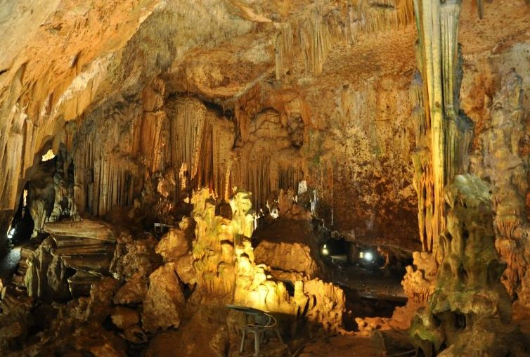
Astım Mağarası
Doğal yapısı ve kendine has atmosferiyle bilinir.
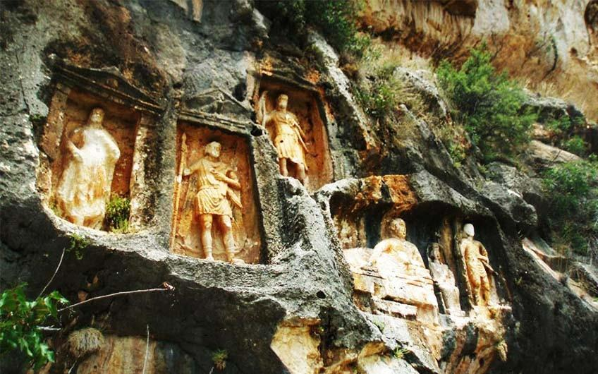
Adamkayalar
Kayalara işlenmiş tarihi figürleriyle öne çıkan vadi.
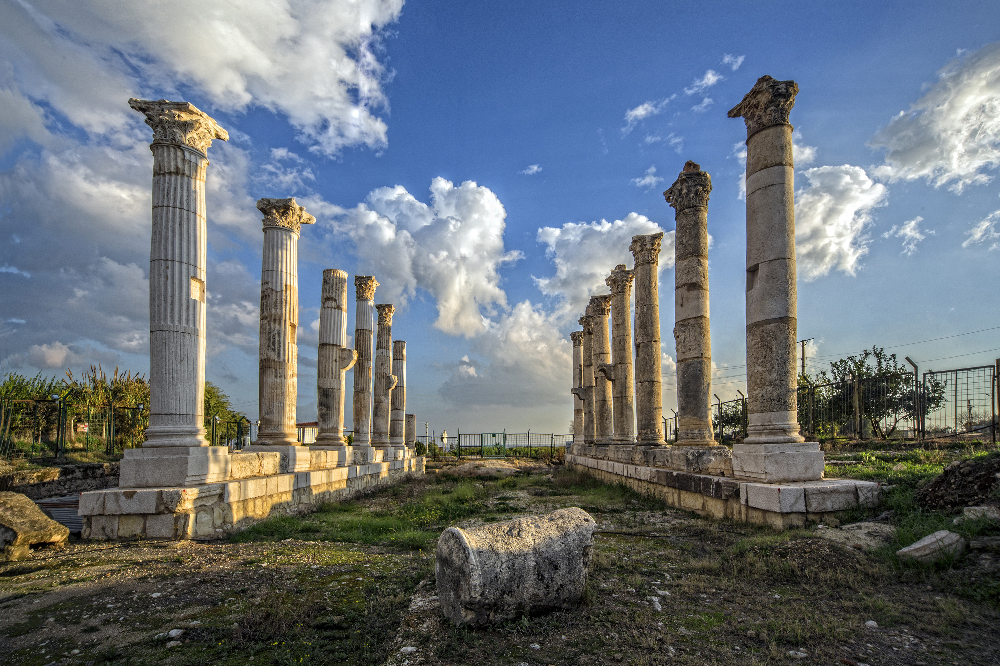
Soloi Pompeipolis
Sütunlu caddesiyle ünlü antik Roma yerleşimi.
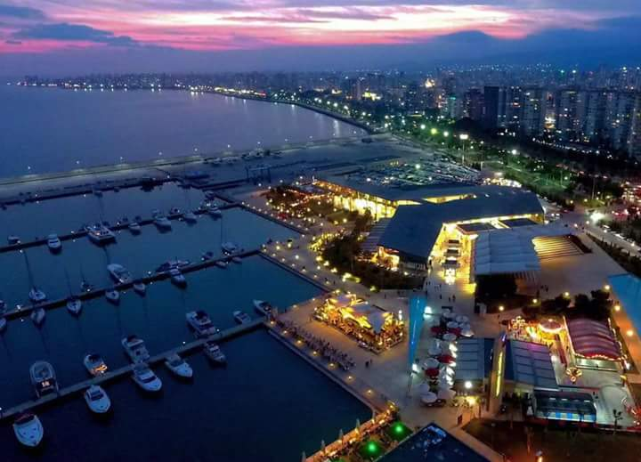
Mersin Marina
Yat limanı, restoranlar ve alışveriş alanları bir arada.
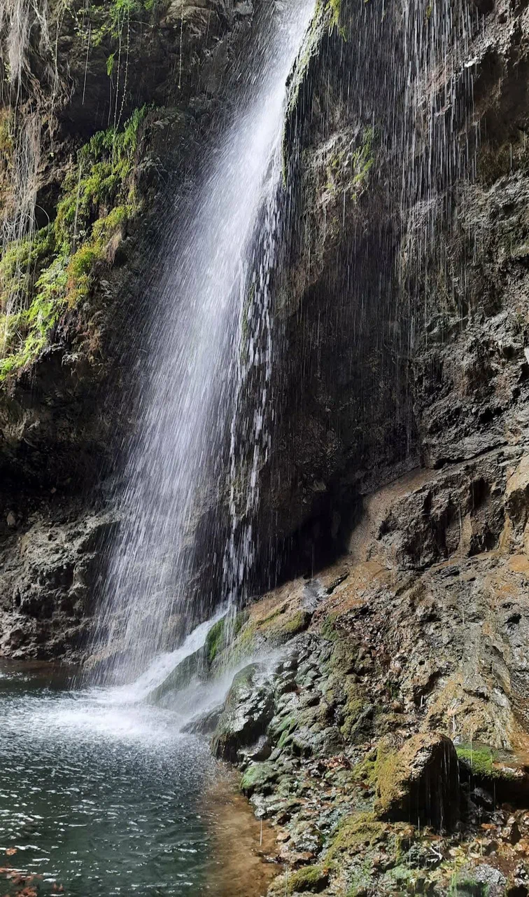
Koramşalı Saklı Şelale
Erdemli'de doğa yürüyüşü için sevilen bir keşif noktası.
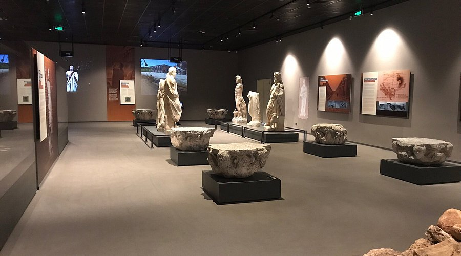
Mersin Arkeoloji Müzesi
Bölgenin tarihine ışık tutan zengin koleksiyonlara sahip.
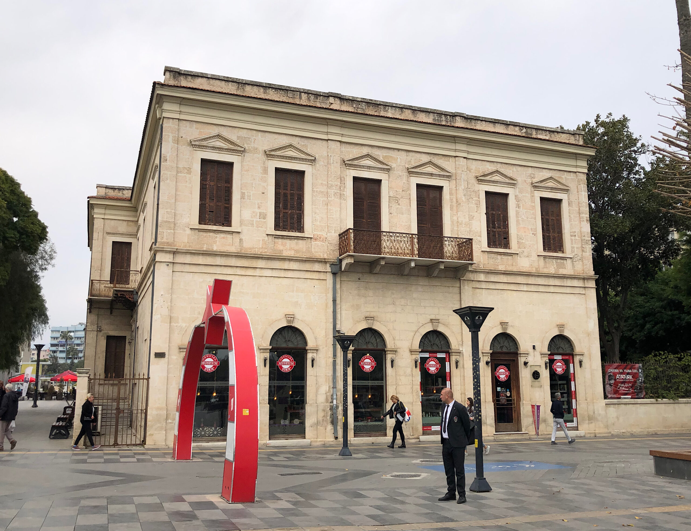
Atatürk Evi Müzesi
Atatürk'ün Mersin ziyaretlerinden izler taşıyan tarihi yapı.
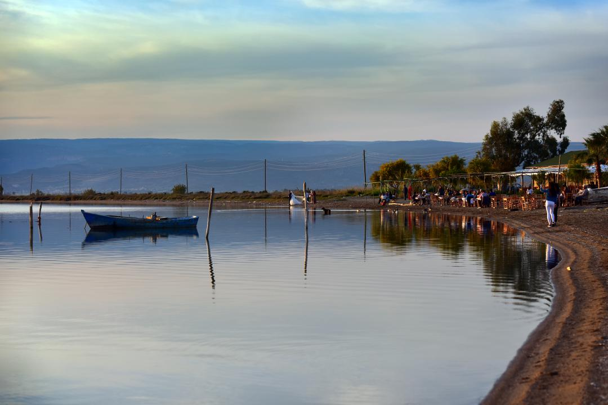
Göksu Deltası
Kuş gözlemciliği ve doğa yürüyüşleri için ideal rota.